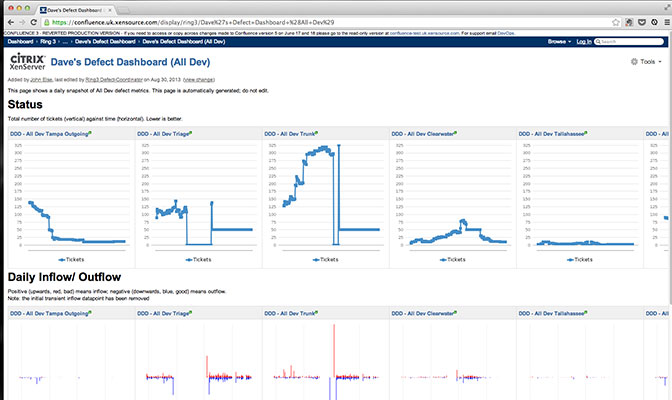
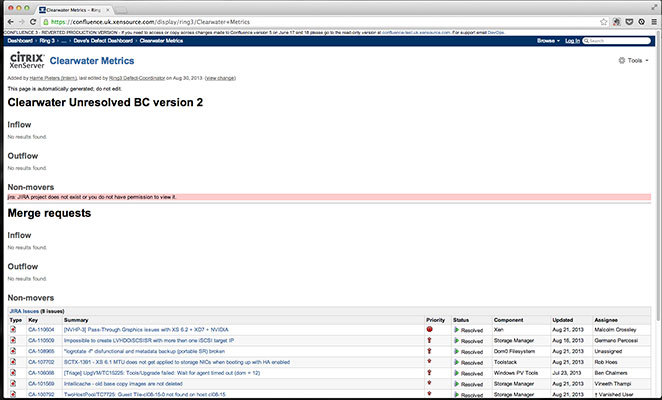
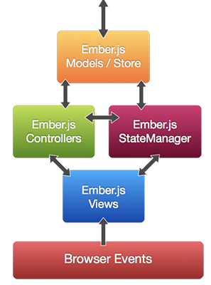
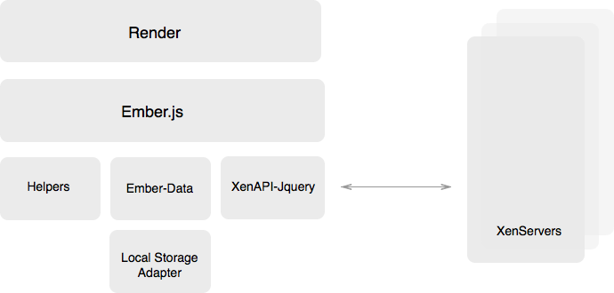

Six Month Internship
A report from the trenches
Outline
- Some of the things I learned
- The projects I worked on
- Technologies used during the work on these projects
CA - 46110
Some of the things I learned
- Linux
- XCP
- Terminal
- Tmux
- IRC
- OCaml
- ...
DefectTools
Introduction
- Build on the existing work in ring 3
- Running python
- Used to get a snapshot of Jira Filters
Dave's Defect Dashboard
-

Malcolm's (Clearwater) Dashboard
-

Daily SCTX Report

Xen API Console
a.k.a. XAC
- A browser based, client side only, single page, application that allows you to control anything that has XenAPI running (e.g. XenServer).
- Based on the previous works of John Ludlam
XenAPI-jQuery
- A Xen API XMLRPC jQuery Client Library
- Please select your api call out of 1400+ possibilities
- Written in Coffeescript
Coffeescript - Introduction
- CoffeeScript is an attempt to expose the good parts of JavaScript in a simple way.
- CoffeeScript "compiles" into javascript
- CoffeeScript is not a superset of JavaScript
- Inspired by the Ruby and Python language
Coffeescript - Example
Coffeescript
eat food for food in foods when food isnt 'chocolate'
Javascript
for (_k = 0, _len2 = foods.length; _k < _len2; _k++) {
food = foods[_k];
if (food !== 'chocolate') {
eat(food);
}
}
XenAPI-jQuery - Usage
var client = new XenAPI(username,password,hostUrl);
client.init(function(error, result) {
if(error) {
console.log(error);
} else {
// Run any api call you want
client.VM.get_all(function(error,result) {
var all_vm = result;
})
}
})
DEMO
Github - Pages
- Get a fresh git clone copy of your repository
- Create a branch called "gh-pages"
- Remove all existing files
- Insert page
XAC
XAC - Tools
- Yeoman - Workflow
- SASS - Preprocessing Stylesheets
- Ember.js - Framework
XAC - Yeoman
A collection of tools and best practices working in harmony to make developing for the web even better
- Yo - Scaffolds out a new application
- Grunt - Is used to build, preview and test your project (Automation)
- Bower - Is used for dependency management
XAC - SASS
Sass is an extension of CSS3. Adding nested rules, variables, mixins, selector inheritance, and more
SCSS
$blue: #3bbfce;
$margin: 16px;
.content-navigation {
border-color: $blue;
color:
darken($blue, 9%);
}
.border {
padding: $margin / 2;
margin: $margin / 2;
border-color: $blue;
}
XAC - SASS
Sass is an extension of CSS3. Adding nested rules, variables, mixins, selector inheritance, and more
CSS
.content-navigation {
border-color: #3bbfce;
color: #2b9eab;
}
.border {
padding: 8px;
margin: 8px;
border-color: #3bbfce;
} XAC - Ember.js

A Framework for creating ambitious webapplications.
XAC - Ember.js
Ember leverages the MVC pattern.
XAC - Ember.js
Ember.js does a lot of "magic".
App.IndexRoute = Ember.Route.extend({
model: function() {
var people = [
App.Person.create({
firstName: "Tom",
lastName: "Dale"
}),
App.Person.create({
firstName: "Yehuda",
lastName: "Katz"
})
];
return people;
}
}); XAC - Ember.js
Ember.js does a lot of "magic".
XAC - Architecture
Shaving a Yak?
yak shaving
- Any apparently useless activity which, by allowing you to overcome intermediate difficulties, allows you to solve a larger problem.
- The actually useless activity you do that appears important when you are consciously or unconsciously procrastinating about a larger problem.
DEMO
Thesis
- Information Engineering
- Bridge between Business and Engineering
- Applying this approach on the open sourcing
Transition from proprietary to open source - a case study at Citrix
- Case Study
- Descriptive research
- Gathering data
Thesis - Goal
The objective is to provide a framework or model that will allow Citrix and others to get insights into the transition process from commercial to open source. This framework/model would provide lessons learned, working practices and failures as well as input on the current open sourcing of XenServer.
How would a framework for the transition from proprietary to open source be defined based on Citrix XenServer?
Thesis - High Level Model
- Business Model
- Process
- Product
- Social
Thesis - Some things I learned
- Open Sourcing is mostly about people
- Open source does not mean the same to everyone
- License is the key to everything
- Writing a thesis is harder than it looks
Thesis - What's next
Thank you!
All files are available on my github account, soon...